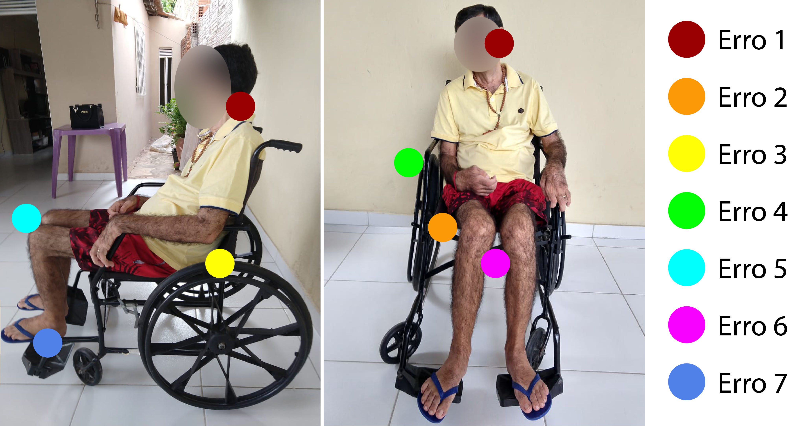

Voltar

Descrição - Mesma figura da tela anterior, agora com sete círculos, todos na cor azul,
dentro dele, está um
número na cor branca. Os círculos estão sobre pontos específicos do corpo do homem. Cada círculo sinaliza um
erro de postura do homem na cadeira de rodas. Abaixo da figura, sete tópicos descrevem cada erro.
A figura mostra uma pessoa com ELA com diversas complicações, por isso foi necessário prescrever a cadeira
de rodas corretamente.
-
O erro 1 (na região cervical, por trás do pescoço)
corresponde à altura do encosto. Quanto maior o comprometimento docontrole
postural, mais alto deve ser o encosto. No caso desta paciente, é perceptível um déficit de controle
postural e assim, ela necessita de apoio em toda a região cervical.
-
O erro 2 (assento da cadeira) refere-se à largura do quadril,
que é uma medida importante tanto para o conforto do paciente, quanto para evitar acidentes domésticos.
-
O erro 3 (na região lombar) refere-se à profundidade do assento para garantir
o adequado posicionamento da pelve e do joelho.
-
O erro 4 (braço da cadeira) corresponde à altura do apoio, pois o cotovelo
deve estar posicionado em 90º para manter a altura do ombro em posição neutra e prevenir o surgimento de
dores.
-
O erro 5 (joelhos quase se encostando) refere-se ao ângulo de flexão do
joelho, imprescindível para pacientes com espasticidade ou redução da flexibilidade dos músculos
isquiotibiais.
-
O erro 6 (entre joelhos) corresponde à distância entre os joelhos, pois esses
devem estar alinhados ao quadril.
-
O erro 7 (pé esquerdo mal apoiado no pedal da cadeira de rodas) corresponde
ao tamanho do pé para mantê-lo em posição neutra.